CS184/284A Fall 2026 Homework 3 Write-Up
Link to webpage: (TODO) cs184.eecs.berkeley.edu/fa26 Link to GitHub repository: (TODO) cs184.eecs.berkeley.edu/fa26
Overview
Give a high-level overview of what you implemented in this homework. Think about what you've built as a whole. Share your thoughts on what interesting things you've learned from completing the homework.Part 1: Ray Generation and Scene Intersection
I implemented ray generation by first converting normalized image coordinates into camera space. I mapped the coordinates to the plane at z = -1, using the horizontal and vertical fields of view to determine the ray direction. I then transformed the direction into world space using the camera-to-world matrix, normalized it, and set the near and far clipping distances.
In raytrace_pixel(), I used gridSampler to generate ns_aa random sample positions within each pixel. I converted these positions into normalized image coordinates by dividing by the image width and height, then generated a camera ray for each sample. I averaged the returned radiance values to determine the final pixel color.
For primitive intersections, I implemented separate ray-triangle and ray-sphere tests. For triangles, I found where the ray intersected the triangle's plane and checked whether the point was inside the triangle. For spheres, I substituted the ray equation into the sphere equation and solved the resulting quadratic for the two possible intersection distances. In both cases, I checked that the intersection was within the ray's valid distance range and updated max_t to keep track of the closest hit.
Triangle Intersection Algorithm
I implemented triangle intersection by first calculating two edge vectors, \(e_1 = p_2 - p_1\) and \(e_2 = p_3 - p_1\), and taking their cross product to get the plane's normal \(n\). Since the normal is perpendicular to any vector along the plane, I used \(n \cdot (P-p_1) = 0\) and substituted the ray equation \(P = o + td\) to solve for the intersection distance:
\[ t = \frac{n \cdot (p_1-o)}{n \cdot d} \]
If the denominator was close to zero, I rejected the intersection since the ray was parallel to the plane. Otherwise, I calculated the intersection point \(P = o + td\) and checked whether it was inside the triangle using three edge tests. For each edge, I took the cross product of the edge vector and the vector pointing toward \(P\), then dotted the result with the plane's normal. If any result was negative, the point was outside the triangle.
For valid intersections, I divided the edge-test values by the squared magnitude of the plane's normal to calculate the barycentric weights. I used these weights to interpolate the three vertex normals and stored the resulting normal, intersection distance, primitive, and BSDF.
Normal Shading Results


Part 2: Bounding Volume Hierarchy
BVH Construction
I implemented BVH construction recursively in construct_bvh(). I first calculated a bounding box containing all the primitives in the current range, along with a separate bounding box containing their centroids. If the number of primitives was less than or equal to max_leaf_size, I created a leaf node and stored the start and end iterators.
Otherwise, I split the primitives along the axis with the largest spread of centroids. I chose the midpoint of this axis as the splitting point and used std::partition() to separate the primitives based on their centroids. If all primitives ended up on one side, I used a fallback split to avoid infinite recursion. I then recursively constructed the left and right child nodes.
For BVH traversal, I used ray-box intersection tests to skip nodes whose bounding boxes were not intersected by the ray. At leaf nodes, I tested the ray against the contained primitives. This avoids checking every triangle in the scene for each ray.
Normal Shading Results
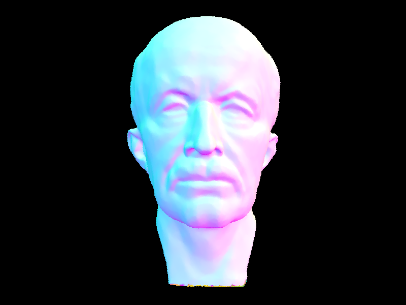
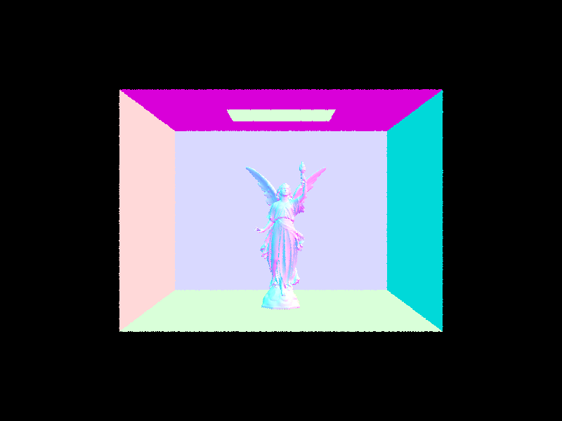
Rendering Time Comparison
| Scene | Without BVH | With BVH | Speedup |
|---|---|---|---|
| cow.dae | 9.001s | 0.648s | 13.9x |
| CBbunny.dae | 69.99s | 0.228s | 307.0x |
| CBdragon.dae | 220.10s | 0.661s | 333.0x |
I compared rendering times for the cow, bunny, and dragon scenes at 800x600 resolution using 8 threads. With BVH acceleration, the cow rendered about 14 times faster, while the bunny and dragon rendered over 300 times faster. By checking the bounding boxes first, the BVH allowed rays to skip groups of triangles that they could not intersect, greatly reducing the number of intersection tests.
Part 3: Direct Illumination
Direct Lighting Implementation
I first implemented the Lambertian diffuse BSDF by returning the surface's reflectance divided by pi. For zero-bounce illumination, I returned the emission of the intersected surface using get_emission(). I then implemented two methods for estimating direct illumination: uniform hemisphere sampling and importance sampling of lights.
Uniform Hemisphere Sampling
In estimate_direct_lighting_hemisphere(), I randomly sampled incoming directions over the hemisphere above the intersection point. I constructed a local coordinate frame using the surface normal, then transformed each sampled direction into world space to trace a ray through the BVH. I set min_t to EPS_F to prevent the ray from intersecting its starting surface.
For each ray that intersected a surface, I retrieved its emitted radiance using get_emission(). I then evaluated the BSDF using the incoming and outgoing directions in local space and multiplied by the incoming radiance and cosine term. Since directions were sampled uniformly, I divided by the PDF of 1 / (2 * PI). Finally, I averaged the contributions over all samples to estimate the outgoing radiance.
Importance Sampling of Lights
In estimate_direct_lighting_importance(), I sampled each light source directly using sample_L(), which returned the incoming radiance, direction toward the light, distance, and PDF. I used one sample for point lights and ns_area_light samples for area lights. I transformed the incoming direction into local space to evaluate the BSDF and cosine term, skipping directions below the surface.
I also cast a shadow ray toward each sampled light, with min_t = EPS_F and max_t = distToLight - EPS_F. If the ray hit another object before reaching the light, I ignored that sample. Otherwise, I multiplied the BSDF by the incoming radiance and cosine term, divided by the PDF, and averaged the contributions for each light. I used direct_hemisphere_sample to switch between the two methods in one_bounce_radiance().
Uniform Hemisphere vs. Importance Sampling
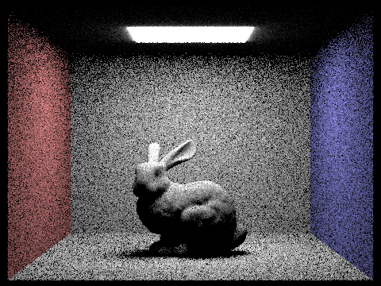
Both methods produce direct lighting and shadows, but uniform hemisphere sampling is much noisier. Since directions are chosen randomly over the entire hemisphere, many rays miss the light source and contribute nothing, while the few that hit it contribute larger values. Importance sampling instead chooses directions toward the lights, so more samples contribute to the estimate. Although some rays are still blocked by other objects, importance sampling produces a smoother image with the same sampling settings.
Soft Shadow Noise Comparison
I rendered CBbunny.dae using importance sampling with one sample per pixel and varied the number of light samples from 1 to 64 to compare the noise in soft shadows.
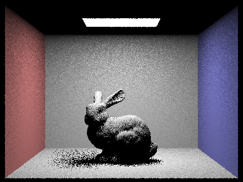
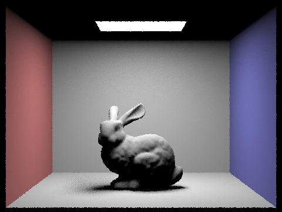
With 1 light sample, the soft shadows are very noisy because each pixel estimates the light's visibility from a single sampled point. At 4 samples, the noise begins to decrease, although the shadow boundaries are still grainy. With 16 samples, the shadows become more consistent, and at 64 samples, the transitions between illuminated and shadowed regions appear much smoother. Increasing the number of light samples reduces variance by averaging more visibility estimates, although it also increases rendering time.
Part 4: Global Illumination
Indirect Lighting Implementation
I implemented indirect illumination in at_least_one_bounce_radiance() by recursively tracing rays between surfaces. At each intersection, I first calculated the direct illumination using one_bounce_radiance(). I then used BSDF::sample_f() to choose one new incoming direction from a cosine-weighted hemisphere, along with its PDF and BSDF value.
I transformed the sampled direction from local to world space and constructed a new ray starting at the intersection point, with min_t set to EPS_F. I also decreased the ray's depth by one. If the new ray intersected another surface, I recursively calculated the radiance at that point and multiplied it by the BSDF, cosine term, and inverse PDF. This lets light reflected from other surfaces contribute to the original intersection. The recursion stops when the ray reaches its depth limit or fails to intersect another surface.
I also implemented Russian Roulette to randomly terminate longer paths. After the first indirect bounce, each path has a 65% chance of continuing. For paths that continue, I divide their contribution by 0.65 to compensate for the terminated paths. Finally, I added the recursive radiance to the zero-bounce emission to calculate the total global illumination.
Global Illumination Results
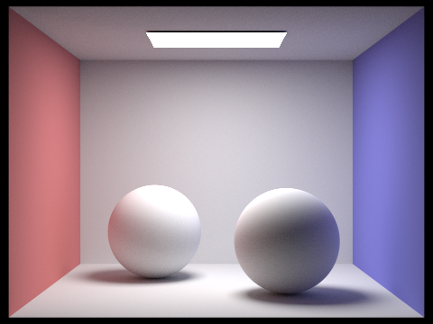
With global illumination, light reaches areas that are not directly illuminated by the ceiling light. The reflected light also carries the colors of surrounding surfaces, producing color bleeding between the Cornell box walls, floor, and objects.
Direct vs. Indirect Illumination
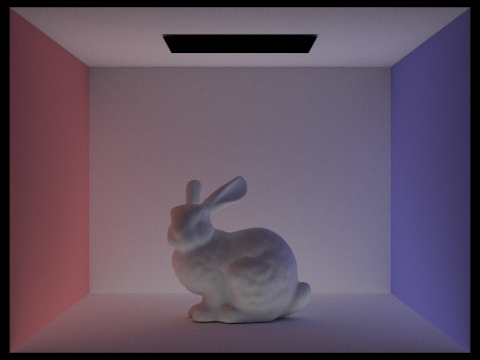
I rendered the bunny with direct and indirect illumination separately to compare their contributions. Direct illumination accounts for light traveling straight from the ceiling light to a surface, producing the main shadding and shadows. Indirect illumination is generally dimmer, but fills in areas that direct light cannot reach and introduces color bleeding from nearby surfaces. Combining the two gives the scene more natural lighting, particularly around the bunny and the corners of the Cornell box.
Individual Bounces
I rendered CBbunny.dae with isAccumBounces = false and max_ray_depth ranging from 0 to 5, using 1024 samples per pixel. Russian Roulette was disabled for these fixed-depth comparisons.
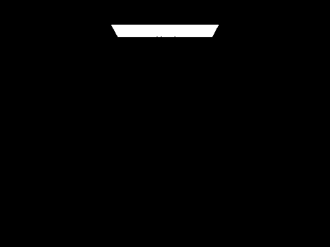
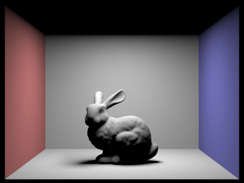
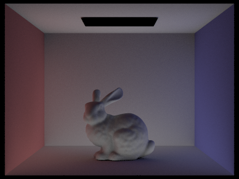
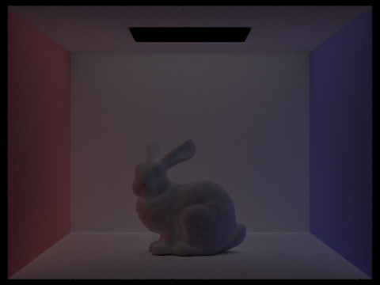
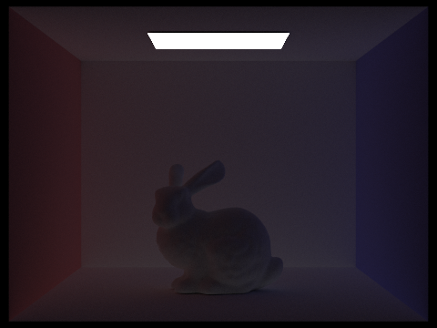
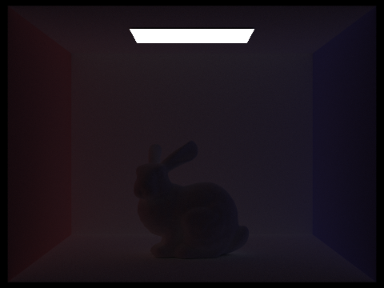
At m = 0, only the light source is visible, while m = 1 shows the contribution from direct lighting. The second bounce shows light that has reflected off another surface before reaching the camera-visible surface, which helps illuminate darker areas and introduces color bleeding. The third bounce adds further reflected light, although its contribution is weaker. Higher bounces become progressively dimmer as less energy is reflected at each surface.
These additional bounces make the scene more realistic than basic rasterization with only direct lighting. In particular, indirect light can illuminate surfaces that are not directly visible to the light source, without having to approximate these effects using additional lights or ambient shading.
Accumulated Bounces
I repeated the renders with isAccumBounces = true so each image includes the contributions from all bounce depths up to the specified maximum.
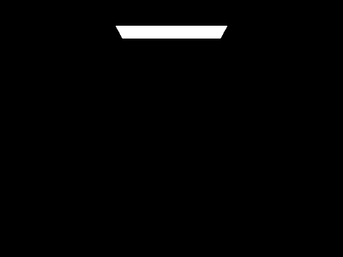
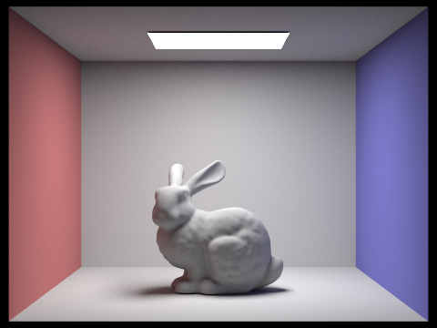
Unlike the individual-bounce renders, the accumulated images become more complete as the maximum depth increases. The first few bounces make the largest difference, brightening the scene and adding indirect illumination. By m = 4 and m = 5, the changes are smaller because higher-order reflections contribute less radiance.
Russian Roulette
I rendered the bunny with Russian Roulette enabled and maximum ray depths of 0, 1, 2, 3, 4, and 100, using 1024 samples per pixel.
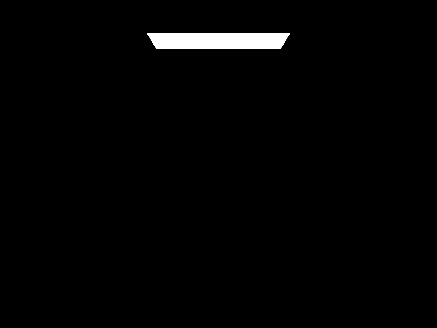
Russian Roulette allows paths to terminate randomly rather than always tracing each bounce up to the maximum depth. By dividing surviving contributions by their continuation probability, the random termination does not systematically reduce the expected raidance. At m = 100, most paths still terminate much earlier, making it possible to estimate longer light paths without tracing every path to the full depth.
Samples per Pixel
Finally, I rendered CBbunny.dae with 1, 2, 4, 8, 16, 64, and 1024 samples per pixel, keeping the number of light samples at 4.
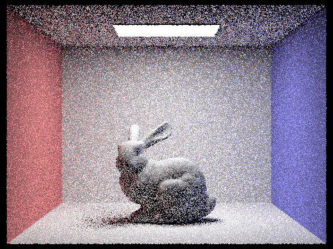
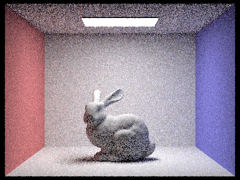
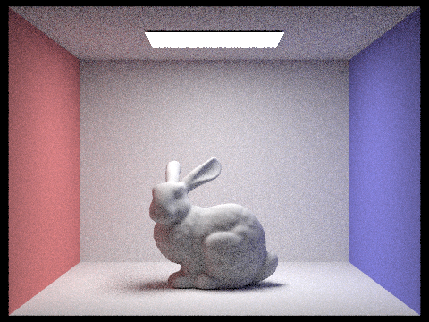
At low sample counts, the renders contain noticeable noise, especially in darker areas and soft shadows. As the number of samples increases, the noise decreases and the indirect lighting becomes more consistent. At 1024 samples per pixel, the surfaces and shadows appear much smoother. Increasing the sample count does not change the underlying lighting calculation, but gives a more stable estimate by averaging more randomly sampled paths.
Part 5: Adaptive Sampling
Adaptive Sampling Implementation
I implemented adaptive sampling in raytrace_pixel() to avoid taking the same number of samples for every pixel. Instead of always using ns_aa samples, I treated it as the maximum number and checked whether each pixel had converged after every samplesPerBatch samples.
For each ray sample, I calculated its illuminance using radiance.illum() and kept track of the sum of the illuminance values and their squares. I used these sums to calculate the mean and variance without storing every individual sample. After each batch, I calculated the confidence interval:
\[ I = 1.96 \frac{\sigma}{\sqrt{n}} \]
If I <= maxTolerance * mean, I stopped sampling that pixel early. Otherwise, I continued until the pixel converged or reached the maximum number of samples. I then averaged the radiance values using the actual number of samples taken and stored that count in sampleCountBuffer.
Adaptive Sample Results
I rendered CBbunny.dae and CBspheres_lambertian.dae with a maximum of 2048 samples per pixel, a batch size of 64, a tolerance of 0.05, one light sample, and a maximum ray depth of 5.
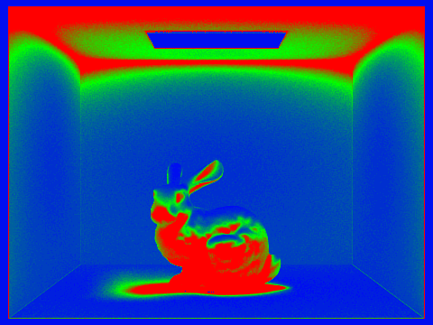
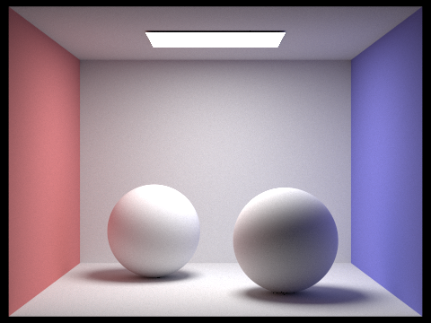
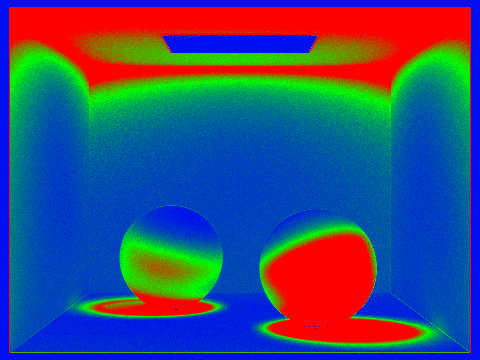
In the sampling-rate visualizations, red regions indicate pixels that required more samples, while blue and and green regions indicate pixels that converged earlier. Areas with more variation in lighting, such as objects and their shadows, generally required more samples than relatively uniform surfaces. This allowed the renderer to concentrate samples in noisier regions rather than using the maximum sample count for every pixel.